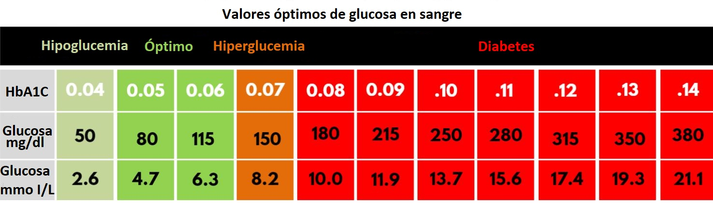

Instrucciones

A continuación se presentara el siguente formulario para predecir el nivel de glucosa en sangre en
pacientes embarazadas,
para obtener resultados coherentes es necesario introducir los siguente datos como se indica a
continuación:
1) Número de embarazos: Numero de veces que la paciente a estado embarazada.
2) Presión arterial(mmHe): La presión diastólica en sangre.
3) Grosor de piel(mm): Es el grosor de piel del triceps.
4) Peso(kg): Peso actual del paciente en ayunas.
5) Altura(cm): Altura actual del paciente.
6) Edad(años): Edad actual del paciente.
7) Insulina(μ U/ml): Valor de insulina en sangre, lo podras obtener mediante un examen médico
Formulario

¿Quiénes somos?

DM+ es una aplicación web que realiza una estimación del valor de glucosa en sangre de mujeres embarazadas. Con esta página Web buscamos informar
a aquellas pacientes y al público en general sobre la diabetes gestiacional y cómo disminuir el riezgo de la misma.
-¿A quién va dirigido?
Este proyecto va dirigido especialmente a todas las mujeres que estén en periodo de embarazo y también a la población en general para
generar concienza sobre el tema.
Objetivos de Desarrollo Sostenible

El 25 de septiembre de 2015, los líderes mundiales adoptaron un conjunto de objetivos globales para erradicar la pobreza,
proteger el planeta y asegurar la prosperidad para todos como parte de una nueva agenda de desarrollo sostenible.
Cada objetivo tiene metas específicas que deben alcanzarse en los próximos 15 años.
Por ello, enfocamos nuestro proyecto a cumplir el 3º objetivo de los ODS, ya que busca el cuidado de las mujeres embarazadas
Predicción

Este es el resultado de nuestra predicción, haciendo referencia a la tabla, el valor que se predice se compara con la fila "Glucosa mg/dl". Como se puede observar los valores óptimos estan entre el 80 - 120.
Contacto
Diego Quintero
Back-End Developer
Misael Zamorano
Back-End Developer
Mohamed Rifi
Front-End Developer
Dylan Aragon
Front-End Developer